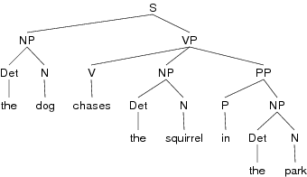
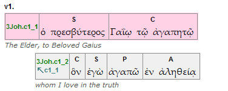
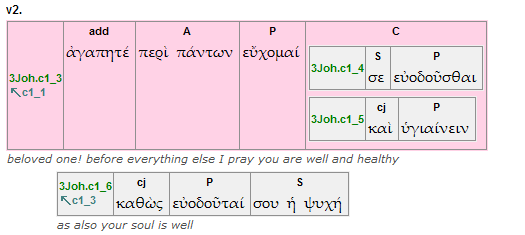
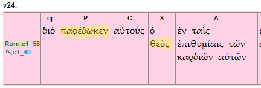
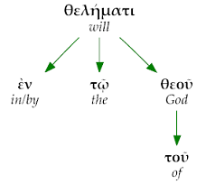
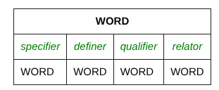
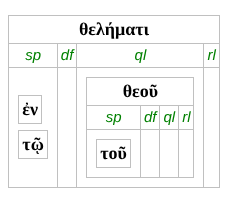
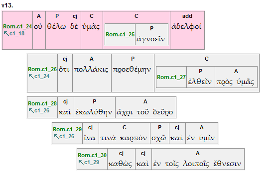

Introducing the OpenText.org Syntactically Analyzed Greek New Testament
Summary
The OpenText.org project has recently completed what we believe to be the first syntactically annotated electronic Greek New Testament. We plan to make the results of this work available over the coming months on this site by allowing users to view, comment on and eventually search the texts of the New Testament. The purpose of this article is to provide a basic overview of what structures and features have been marked in the OpenText.org syntactical GNT and indicate some of the search and display facilities that it will make possible.
What is syntax and what should a syntactical text include?
Morphologically and lexically analyzed texts of the Greek New Testament have been available for a number of decades through the pioneering work of projects such as CCAT and the Gramcord project. These texts have been incorporated into most of the Bible software packages which provide powerful searching and display functionality. There are a range of schemes used in these various texts and a variety of different formal and semantic features are marked. However, the common denominator is the basic unit of analysis to which these features are attached–the word. There are limits to what grammatical information can and should be marked on a what. That is to say words alone make up only a part of the grammatical picture.
Grammar is often defined of consisting of two complementary components:
- Morphology - the building blocks (i.e. stems, endings, prefixes, etc.) that come together to make up words
- Syntax - the structures and patterns by which words combine together and relate to one another to communicate meaning
These two components work together to make up the grammar of a language. There is variation from language to language as to the relative roles played by morphology and syntax. For instance, English morphology is somewhat weak or sparse in comparison to that of Hellenistic Greek, so syntax plays a more important role in establish grammatical functions in a clause such as subject and object. However, the difference between morphology, focused on the structure or pattern of the word, and syntax, focused on the patterns and structures that exist between words holds for all languages.
The large number of syntactical models have been developed in both traditional grammar and modern linguistics. And there are considerable differences in terminology, methods of analysis and focus. As far as possible a syntactically annotated text should try to utilize as broadly theory neutral a method of analysis as possible.
The question is what is a suitable model for the syntactical analysis of the Greek of the New Testament? This is best answered by listing some of the desirable features for such a model:
- The model should be descriptive, that is, it should be able to account for the range of structures and patterns found in the New Testament corpus without assuming certain normal or idealized patterns.
- The model should account for the various levels of grammar (or discourse), ranging from the word, phrase, clause, complex clause up through the paragraph and beyond. And as far as possible the analysis at each of these levels should remain distinct.
- The model should make use of the smallest number of categories necessary to account for the fundamental or core components that make up the syntactical structures described.
- These categories should be based primarily on formal distinctions, relying on interpretive or semantic distinctions as little as possible.
- The model should be flexible and extensible so that future analysis, which may make use of a range of specific and more detailed models, can build on the basic units and structures marked in the text.
We have tried to build these qualities into the simple model used for the OpenText.org syntactical analysis. We have tried to keep the technical vocabulary to a minimum and focus on a small number basic features in a syntactical analysis.
- Marking the boundaries of the next two units of language above the word: the word group and the clause.
- Marking the extent, and labeling the function of the core components (or elements) within a clause (these include the subject, predicator (verb) and various adjuncts).
- Analyzing the relations that exist between the words within a word group (or phrase). In other words, marking which words are modified by other words and what kind of modification holds between these words.
- Marking the basic relation of coordination or dependency (subordination) between clauses in a discourse.
The following sections cover each of these four stages and provide some examples.
1. Units of analysis
The OpenText.org annotation model is organized according to levels of discourse, beginning with the word, moving up to the word group (made of one or more words), on to the clause (consisting of one or more word groups) and so on. The first release of the OpenText.org linguistically analyzed Greek New Testament covers levels 1 through 3 at what is termed the basic level of conformance. The table below lists the first three levels and the features that have been analyzed and marked.
| Level | Unit | Features analyzed |
|---|---|---|
| 1 | Word | lexical form, part-of-speech, morphological features relevant for each pos (i.e. tense-form, voice, mood for verbs and gender, case and number for nouns and adjectives) and semantic domain classification(s) for each word |
| 2 | Word group | boundaries of the word group (i.e. which words it contains), head-term and its modifiers, connective words (i.e. conjunctions functioning within or between word groups) |
| 3 | Clause | boundaries of the clause, core components (Subject, Predicator, Complement and Adjunct) and peripheral components (conjunction, addressee) within the clause; clause level (Primary, Secondary or Embedded) |
Apart from the additions of semantic domain information from the Louw-Nida Semantic Domain Lexicon, the features marked at Level 1: Word should be familiar from the existing morphological texts. Sections 2 and 3 below will explain the features marked at the word group and clause levels. Here we will just consider the concepts of the clause and word group.
The Clause Unit
Somewhat formally, the clause can be defined as follows:
A clause is a unit of language that contains a single proposition about which the language user is making an assertion, negation, query or suggestion
Less formally, we could say that a clause will usually have just one finite verb-form or at least the implication of one (for ‘verbless’ clauses). Alternatively–using the linguistic terminology of a process to refer to an action or event involving one or more participants in a certain circumstance (or circumstances)–a clause contains a single main process and accompanying participants and circumstances.
To make the concept more concrete, consider the following example:
Jn 1.1: ἐν ἀρχῇ ἦν ὁ λόγος, καὶ ὁ λόγος ἦν πρὸς τὸν θεόν, καὶ θεὸς ἦν ὁ λόγος.
According to the punctuation of the standard Greek text, this verse is a single sentence. The sentence has functioned as the core unit in both traditional grammar and much of syntactical theory in linguistics. However, the status or even existence of the sentence in Greek is highly debated. Leaving this question aside, it should be clear from the definitions of a clause that Jn 1.1 is neither a single proposition nor does it consist of just one finite verb-form (i.e. a single process).
It does in fact consist of three clauses:
ἐν ἀρχῇ ἦν ὁ λόγος | καὶ ὁ λόγος ἦν πρὸς τὸν θεόν | καὶ θεὸς ἦν ὁ λόγος |
(Note that conjunctions are included within the boundaries of a clause and do not sit in between clauses as in some models).
At this most basic level, the OpenText.org text represents a significant advance over what has existed before. That is to say every single clause in the Greek New Testament has been explicitly marked. Searches for words and morphological features can now be reliably specified to search within a single clause.
The Word Group Unit
To define the word group we make use of the concept of a head-term–informally, a word that does not depend/modify any other word in its group.
A word group consists of a single head-term and any and all of its modifiers, though it will frequently consist of just a single word.
For example, in the first clause of Jn 1.1 there are three word groups (head terms are underlined and word group boundaries marked with brackets):
[ ἐν ἀρχῇ ] [ ἦν ] [ ὁ λόγος ]
Frequently the boundaries of a single word group will coincide with the boundaries of the functional components within a clause (discussed below), such as subject, predicator (verb) and complement (e.g. direct or indirect object). However, often there will be a series of word groups within a single component. For example, consider the subject of the first clause in 1 Thessalonians chapter 1 (marked in bold):
1 Thess. 1.1: Παῦλος καὶ Σιλουανὸς καὶ Τιμόθεος τῇ ἐκκλησίᾳ Θεσσαλονικέων ἐν θεῷ πατρὶ καὶ κυρίῳ Ἰησοῦ Χριστῷ
The ‘subject’ of the clause, ‘Paul and Timothy and Silas’, consists of three word groups:
[ Παῦλος ] [ καὶ Σιλουανὸς ] [ καὶ Τιμόθεος ] [ τῇ ἐκκλησίᾳ Θεσσαλονικέων ] [ ἐν θεῷ πατρὶ ] [ καὶ κυρίῳ Ἰησοῦ Χριστῷ ]
Again, at a basic level marking the boundaries of every single word group in the New Testament–as we have done in the OpenText.org syntactical text–is a significant advance over existing morphologically analyzed texts. It is thereby possible to search for combinations of words within the boundaries of a word group. For example, one might want to search for all occurrences of the words θεός and ἀγάπη in a single word group, i.e. one of the words is modified by another. With existing texts and search programs, you would have specify a certain number of words for the extent of the search and the search might return instances where the two words are actually in consecutive word groups.
Combining the analysis of word group and clause boundaries, Jn 1.1 can be represented as follows:
[ ἐν ἀρχῇ ] [ ἦν ] [ ὁ λόγος ] |
[ καὶ ] [ ὁ λόγος ] [ ἦν ] [ πρὸς τὸν θεόν ] |
[ καὶ ] [ θεὸς ] [ ἦν ] [ ὁ λόγος ] |
2. Clause structure
In the previous section the existence of grammatical functions within a clause, such as subject and object, was alluded to. In addition to marking clause boundaries a syntactical model should account for these kinds of components within the clause. Various categories and methods of analysis exist within different syntactical models. Tree structures are often used as a means of displaying the structure of a clause with formal labels on the various nodes such as NP (noun phrase), VP (verb phrase) and PP (prepositional phrase). For example, the English sentence, The dog chases the squirrel in the park, would be represented as:

This kind of analysis (along with a set of rules to specify allowable structures and operations to form particular configurations) has proved particularly valuable for languages such as English where syntax plays a key role in determining grammatical function. It is also central within formal models that focus primarily on the specification of the internal language faculty and less on the description of actual instances of language use. It does, however, have limitations for working with a ‘dead’ (epigraphic) language like Hellenistic Greek and with languages with a relatively free word order. For instance, it is questionable whether a verb phrase unit operates in Greek. Further, the phrases in this analysis are identified according to the part-of-speech category of their dominant term, i.e. NP = noun, VP = verb, PP = preposition. These labels give little information as to how the particular phrase is functioning within the sentence.
Recent developments in syntactical theory have focused on grammatical functions (subject, object, etc.) and associated semantic roles (agent, actor, patient, goal, etc.). This has added considerable descriptive power to the models, particularly as analysis moves to the larger units of discourse (i.e. in discourse analysis). The OpenText.org analysis of the clause recognizes and marks a small set of grammatical functions within a clause. These functions are associated with divisions/components within the clause. These can be thought of as different slots filled by certain word groups. Even though the terms used to describe these slots may be unfamiliar to users of the OpenText.org database, one should be able to understand the boundaries of these components.
The ‘Core’ Clause Components
The clause components can be divided into core and peripheral components, depending on their involvement with the process of the clause. The core components are as follows:
| Component | Abbreviation | Contains |
|---|---|---|
| Subject | S | grammatical subject |
| Predicator | P | main verb |
| Complement | C | objects and other words that ‘complete’ the verb |
| Adjunct | A | adverbs, adverbial clauses, prepositional phrases modifying the verb |
These can be illustrated with the analysis of 3 John 1. This particular diagrammatical representation uses boxes to represent clauses, with the components as divisions within each box. (For now we can ignore the difference between gray and pink clauses).

The first clause does not contain a verb, so has no Predicator. But the two participants in the implied ‘greeting’ process are represented with Subject (‘the elder’) and the Complement (‘beloved Gaius’) ‘slots’. The second clause contains one of each of the four core components.
More formal definitions of these components are:
- The Predicator (P) of a clause is its verbal element, which grammaticalizes the process of the clause.
- The Subject (S) of a clause is the word group or word groups providing greater specification regarding the grammatical subject of a finite verb form (the morphological indication of person and number). For finite verbs the head term of this group (or these groups) are in the nominative case. In infinitive clauses the ‘subject’ may be indicated in the accusative case. In so-called ‘genitive absolute’ constructions the subject component occurs in the genitive case. A clause will often have no subject component and can have at most one subject component.
- A Complement (C) of a clause is a word group or the word groups that ‘completes’ the predicate of the clause. The categories of direct and indirect object from traditional grammar are among those classified as complements. A clause may have no complement or many complements. With relation to the process of the clause, the complement(s) are those components of the clause that answer the question “who?” or “what?” is affected by the process.
- An Adjunct (A) of a clause is a word group or the word groups that modify the predicate, providing an indication of the circumstances associated with the process. Common adjuncts are prepositional and adverbial phrases (adverbs) and also embedded “adverbial clauses”. With relation to the process of the clause, adjuncts provide answers to questions of the type “where?”, “when?”, “why?” and “how?”.
The ‘Peripheral’ Clause Components
There are two further clause components that are described as peripheral because they are not as closely connected to the process as the core components. The conjunction component contains words that function to link the clause to preceding or following clauses in the discourse. The addressee component serves an interpersonal function and contains words used to call attention to one of the participants (either internal or external) in the discourse.
| Component | Abbreviation | Contains |
|---|---|---|
| addressee | add | vocative forms or forms functional interpersonally to call attention, i.e. nominative as a vocative |
| conjunction | cj | conjunctions and other participles used to link clauses |
These components, along with the core components, are illustrated in the box clause diagram for 3 John 2:

The first clause begins with the vocative, ἀγαπητέ, creating an external link or call to the hearer/addressee of the letter. The process of this clause, εὔχομαί (pray), is not accompanied by an explicit subject but has temporal/sequential circumstance, περὶ πάντων (‘before all things’), as an adjunct and a complex complement containing two infinitive clauses. The complement illustrates a frequent phenomenon where a clause occurs as the content of a clause component. This is referred to as ‘clause embedding’. Embedded clauses frequently have non-finite verbs as predicators, i.e. participial and infinitive clauses. However, finite clauses can also be embedded within a component of another clauses, i.e. a relative clause as the subject of a clause. In terms of structural analysis, embedded clauses are treated in the same way as unembedded clauses. The embedded clause 3Joh.c1_5 begins with a cj (conjunction) slot. This word functions to link clause 3Joh.c1_5 to 3Joh.c1_4. In the same way, 3Joh.c1_6 begins with καθὼς, a conjunction component that links the clause to 3Joh.c1_3.
The addition of clause components within the clause boundaries opens up a whole range of search potential. It is possible to search for clauses containing specific components, i.e. clauses with PC or SPC components, which are likely to be transitive clauses. One could also examine the ordering of components, i.e. SPC versus PSC and so on. Combining features annotated in Levels 1 and 2 it is possible to search for particular combinations of lexical forms, grammatical features and semantic domains occurring within particular clause components. For example, a search might specify clauses that have the word θεός in the Subject slot and a Predicator containing an active verb form from semantic domain 57 (Possess, Transfer, Exchange) of the Louw-Nida lexicon. This would find clauses such as those in Rom. 1.24 & 26:

3. Word group relations
Marking the boundaries of word groups within a clause was discussed in section 1 above. A word group consists of a single head term and the words which modify the head term. These modifiers can in turn be modified by other words, which can be further modified by additional words, and so on. Syntactical theories refer to this kind of chain of modification (that theoretically can be endless) as recursion.
An illustration of how the analysis of word group modification can be seen in the word group ἐν τῷ θελήματι τοῦ θεοῦ (‘in/by the will of God’) from Rom. 1.10. The head term is θελήματι, which is modified directly by three words: ἐν, τῷ and θεοῦ. The last of these modifiers,θεοῦ, is in turn modified by τοῦ. This analysis is illustrated in the dependency tree diagram:

The basic elements included in the word group analysis–the marking of the boundaries of the group (i.e. the division of the Greek New Testament into phrase units) and the marking of the modification relations that exist between words within a group–represent a significant advance over what is currently available in morphological texts. It is now possible, for instance, to search for a certain word, e.g. ‘will’ and produce a list of the words that modify it in the New Testament.
The next step is to add type values on top of the modification links between words. In other words, to specify what kind of modification relation holds between the two words. Unsurprisingly, there are a number of different models of how these relationships between words and their modifiers should be described and a range of associated terminology. In the OpenText.org model we have tried to identify a small number of modification types that take place between individual words:
| Modification type | Abbreviation | Typical word type |
|---|---|---|
| Specifier | sp |
article, preposition |
| Definer | df |
adjectives, appositional words, adjectival clauses |
| Qualifier | ql |
genitives, datives, negative particles negating word or word group |
| Relator | rl |
words modified by a preposition, i.e. in traditional terms the head term of the object of a preposition |
The word group analysis can be visualized using a series of nested boxes. Each box represents a word, the form of which is placed in the top row.

Under the word are four slots, one for each of the possible modification relations. Other words–boxes with the same structure–can put placed into these slots and so on.

The word group ἐν τῷ θελήματι τοῦ θεοῦ would be represented as follows. It should be clear how quite complex structures and levels of nesting can result. But the basic principle that every word is either a head term or a modifier of one other word is always in operation.
The following are more formal definitions of each of the four modification types marked in the OpenText.org word group annotation.
Specifiers (sp)
- A Specifier is a modifier that classifies or identifies the word it modifies.
Common examples of specifiers are articles, e.g. ἡ ἀδελφή, and prepositions, e.g. ἐν δόξῃ. In a preposition phrase such as εἰς τὸν λόγον, both εἰς and τὸν are specifiers of λόγον
Definers (df)
- A Definer is a modifier that attributes features or further defines the word it modifies.
Common examples of definers are adjectives (both attributive and predicate structure) and appositional words or phrases.
Qualifiers (ql)
- A Qualifier is a modifier that in some way limits or constrains the scope of the word it modifies.
Common examples of qualifiers are words in the genitive and dative case, and also negative particles functioning at the word group level.
Relators (rl)
- A Relator is a modifier which is specified by a preposition (i.e. the Relator is the object of a preposition) that modifies another element within the word group.
For example, in the word group κατ᾽ ἐμὲ πρόθυμον, the term ἐμὲ is in a prepositional relationship with the head term πρόθυμον. This relationship only applies to prepositional phrases within word groups and not when the prepositional phrase functions as a clause component.
Having the four modification types: specifier, definer, qualifier and relator, marked in an electronic Greek New Testament opens up a whole range of search possibilities. Because of the relative flexibility of Greek word order it is not always easy to find all the modifiers of a word with a single search rule. For example, consider the placement of the possessive pronoun σου in a few word groups from Philemon.
- Phlm 2. τῇ κατ᾽ οἶκόν σου ἐκκλησίᾳ
- Phlm 5. σου τὴν ἀγάπην
- Phlm 7. ἐπὶ τῇ ἀγάπῃ σου
The genitive modifier σου can either follow or precede the word it modifies. The fact could be included in a search using a standard morphological text. However, this may lead to imprecise or ambiguous results. For instance, it seems clear that σου qualifies οἶκόν and not ἐκκλησίᾳ in Phlm 2. But allowing for modifiers to precede and follow the word they modify in a search wouldn’t exclude either possibility. The annotation of word group structure and modification relations allows for more accurate searches to be carried out.
4. Clause connections and levels
A strict adherence to the levels of analysis principle would mean that any information above the level of the clause concerning the way in which clauses relate to one another should belong to the next level (Level 4 - Paragraph) above the clause. However, to make the first release of the OpenText.org annotation useful for the study of stretches of text larger than the clause we have included some basic connection and dependency information at the clause level.
Clause Levels
There are three basic types of clause recognized in the OpenText.org analysis, related to the informational level on which they function. As a discourse is created, information is presented in a sequential or linear order (i.e. it is not possible to say everything at the same time, so information must be ordered).
Certain clauses belong to primary level of information, that is they introduce new pieces of information and move the message of the discourse along from the start towards the end of the message. Some models of discourse refer to this level as the backbone of discourse. In spatial terms, primary clauses can be said to function to provide the horizontal movement within the discourse.

Other clauses, referred to as secondary clauses serve to provide further definition or to add to the information presented in a primary clause. In spatial terms they build up in the vertical plane. The functional, discourse explanation of primary and secondary clauses can be supplemented with the following table, which lists the three types of clause and the formal or categorical features that determine them.
| Clause type/level | Features |
|---|---|
| PRIMARY | An independent clause (usually contains a finite verb form) that is not dependent on or subordinate to any other clause. |
| SECONDARY | A clause that depends on (is subordinate to) another clause. This dependency/subordination is usually indicated by the presence of certain particles/conjunctions (traditionally referred to as subordinating particles). Common secondary clauses are relative clauses and clauses beginning with words such as ὡς/καθώς and ὅτε/ὅταν. Non-embedded participle and infinitive clauses (i.e. genitive absolute and infinitive clauses beginning with a preposition + article combination) as also classified as secondary. |
| EMBEDDED | A clause that occurs inside a component of another clause. Frequently the predicator of embedded clauses are non-finite (i.e. participal and infinitive clauses), but finite clauses can also be embedded. |
In the box clause diagrams in the sample section of the OpenText.org website, primary clauses are pink and secondary and embedded clauses are gray.
Clause connections
Alongside the three levels of clause distinguished in the OpenText.org clause annotation is the concept of clause connection. Each clause is marked with a connect value which indicates the clause within the surrounding discourse to which it is most immediately relates. In the diagram below, this value is indicated at the beginning of each clause underneath the clause identifier.

So clause Rom.c1_26 connects to Rom.c1_24. Rom.c1_26 is a secondary clause connected to a primary clause, so it is indented and said to depend on Rom.c1_24. The next non-embedded clause, Rom.c1_28 is also a secondary clause and it connects back to Rom.c1_26. However, it has been analyzed in a coordinate relationship (connected by καὶ) and so is not indented. In contrast, the following clause, Rom.c1_29, is subordinate to the clause it connects with (Rom.c1_26) and is therefore displayed with a further level of indentation.
Future work will be focused on refining these categories and considering if there are appropriate categories, such as purpose, cause, condition, etc., that could be applied to the connections and dependencies between clauses.
Summary
The purpose of this article has been to introduce the work of the OpenText.org in completing the initial syntactical analysis and annotation of the Greek New Testament. The following features of the OpenText.org syntactically analyzed Greek New Testament text have been highlighted:
- The marking of units above the word level, namely the word group and the clause.
- The analysis of every clause using simple functional categories: Subject, Predicator, Complement and Adjunct.
- The determination of the relationships of modification that hold between the words in a word group and assigning them to one of four basic semantic types: Specifier, Definer, Qualifier and Relator.
- The clause types/levels, Primary, Secondary and Embedded and the ways in which they interact.